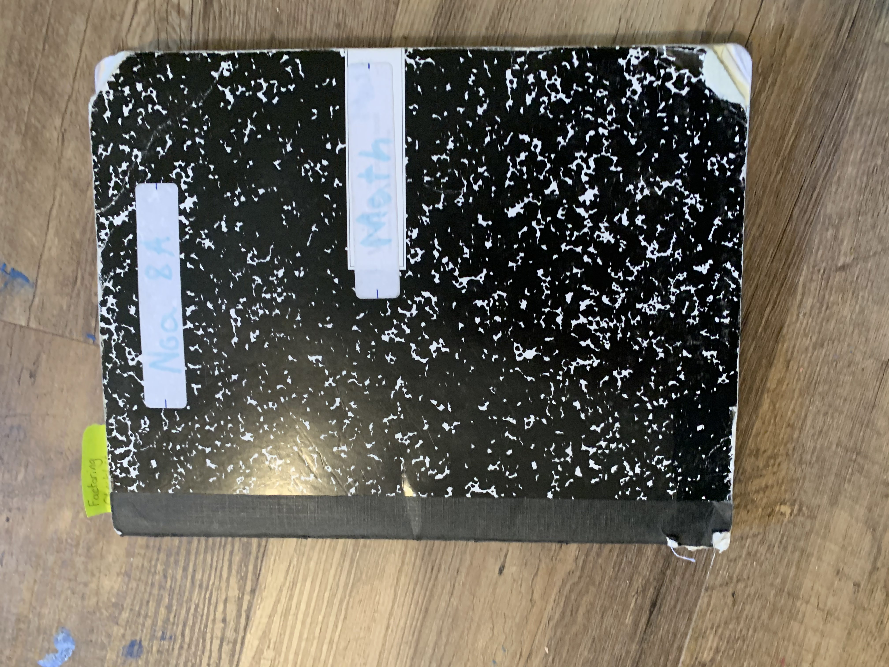
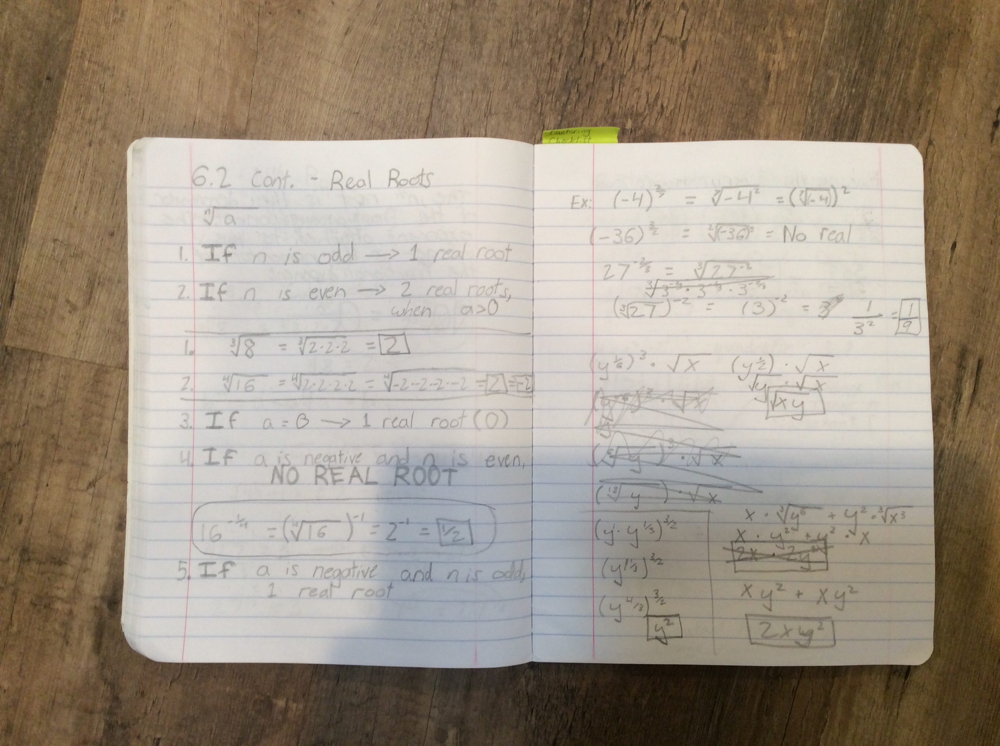

Math Artifact
Back to Home
Reflection Questions And Responses
Artifacts And Reflections
Extracurricular Activities
Code Page
Math Artifact
Math Journal


This is my math notebook, where I take notes to give me a better understanding of the content of the lesson. This journal shows my ability to take proper notes and my ability to understand and write down each math lesson.